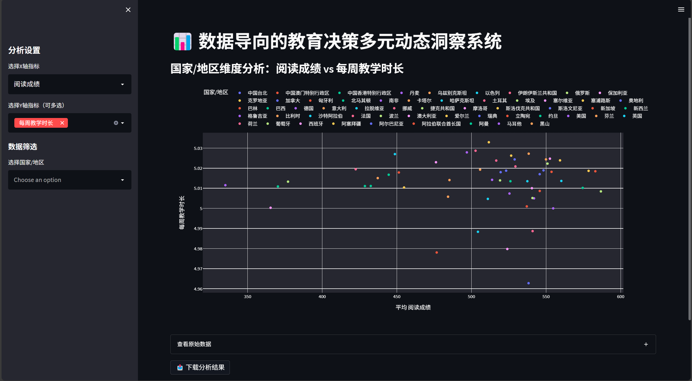

中文
数据导向的教育决策多元动态洞察系统
“教育不是灌满一桶水，而是点燃一把火。 —— 叶芝”
首页
教育资讯
数据实例
自助图表
国内教育与阅读新闻
教育部官方网站 - 获取国内教育政策、资讯等
豆瓣读书 - 国内热门书籍推荐、书评等
澎湃新闻 - 有丰富的教育领域新闻报道
中国教育报 - 专业的教育新闻媒体
国外教育与阅读新闻
美国教育部官网 - 了解美国教育政策和动态
卫报教育板块 - 提供英国及国际教育新闻
Goodreads - 全球知名的书籍推荐和社交平台
TES - 专注于教育资源和新闻的英国网站
便于分析的现有图表
学生背景数据相关
教师背景数据相关（1）
教师背景数据相关（2）
家庭背景数据相关
学校背景数据相关
学生阅读素养相关（a5）
学生阅读素养相关
自助图表
支持自由选择指标进行个性化分析
前往自助图表

已参与的国家和地区：64